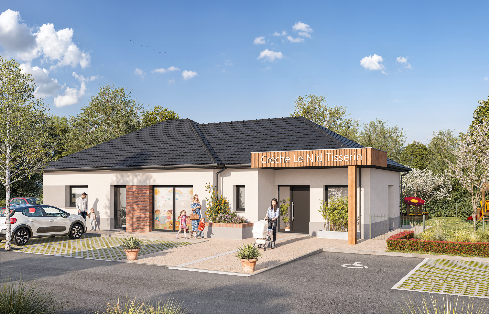
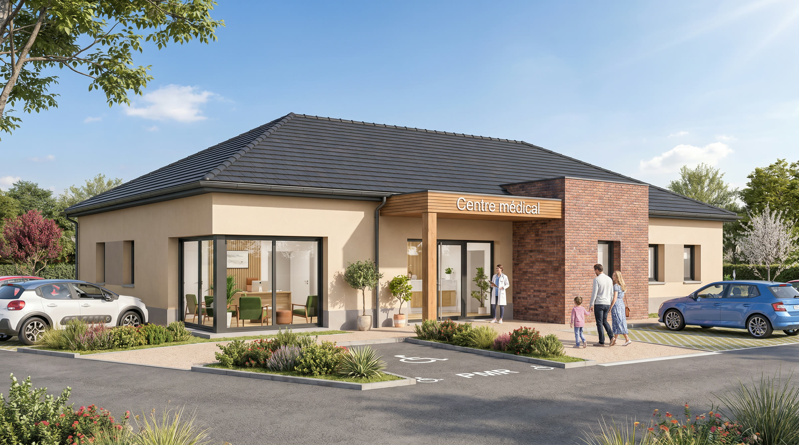

Landing pages ERP
Tisserin Maison Individuelle. Un gabarit unique, trois métiers. Seuls les titres, les textes et les visuels changent d'une page à l'autre.
-

Petite enfance
Micro-crèches et lieux d'accueil de jeunes enfants.
-

Médical
Cabinets, maisons de santé et lieux de soin.
-

Professions réglementées
Études, cabinets et bureaux recevant de la clientèle.
Maquettes de recette, hébergées pour relecture. Les pages sont en
noindex, nofollow. Le formulaire de contact n'est pas branché : il reprend le
balisage du formulaire de rappel du site, mais aucune donnée n'est envoyée depuis ici. Le
téléphone et l'email du pied de page sont des valeurs à compléter.